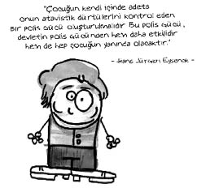
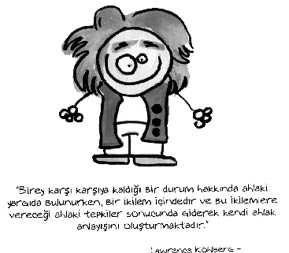

Hans Jürgen Eysenck (1916-1997)
İngiliz psikolog. Anne ve babası oyuncuydu. İki yaşındayken anne ve babası ayrılınca büyükannesi tarafından yetiştirildi. Çok asi bir kişiliğe sahip olan Eysenck için “entelektüel dünyanın aykırı insanı” gibi tanımlamalar da yapılmıştır.
Kişiliğin oluşumunun üçte ikisinin kalıtımdan kaynaklandığını söyler. Bir grup psikologla beraber zekânın da büyük ölçüde kalıtımsal olduğu düşüncesini geliştirmiş, örneğin siyahların ortalama zekâsının beyazlardan, İrlandalılarınkinin İngilizlerden genetik olarak daha düşük olduğunu savunmuştur.
Kişilik ve zekâ gibi ruhsal farklılıkların belirlenmesinde genetiğin önemini vurgulayan Eysenck’in adıyla anılan bir de kişilik envanteri vardır. Bu, Eysenck kişilik envanteri, on altı yaş ve üstüne uygulanan bir kâğıt kalem testidir.
Eysenck’e göre, bir davranışın yapılmasını engellemek için önce ceza verilmelidir. Ödülden sonra verilen cezanın bir hükmü, bir değeri yoktur. Yani Eysenck, Nasrettin Hoca misali, çocuğu testiyi kırmadan tokatlayanlardan…
Eysenck daha sonra buradan yola çıkarak, psikopatların, toplum tarafından cezalandırılmalarına rağmen istenmeyen davranışlarını sürdürmekte neden hâlâ ısrar ettiklerini açıklamaya çalışmıştır.
Eysenck’in tipleri…
Eysenck de diğer ayırıcı özellik yaklaşımını savunanlar gibi kişilik özelliklerini faktör analizi yöntemiyle gruplamış ve bunun sonunda üç tip kişilik özelliğini çıkartmıştır. Bu kişilik tipleri; İçedönük-dışa dönük, nevrotik ve psikotik’tir.
İçe dönük olanlar; sessiz, çevreye karşı kapalıdır. İnsanlardan kaçar, kendi başına kalmak isterler. Okumak, yazmak, resim, müzik gibi uğraşılardan hoşlanırlar. Bireylerle ilişki kurmazlar. Zor arkadaş edinirler. Günlük yaşantıları ciddiye alırlar. Kurdukları toplumsal ilişkileri sınırlı ve dengeli olarak sürdürürler. Yaşama bakış açıları karamsardır.
Dışa dönük olanlar; insancıl ve cana yakındırlar. Bireylerle birlikte bulunmaktan hoşlanırlar. Kolay ilişki kurar, çabuk arkadaş edinirler. Kendi başlarına kalmaktan, okumak ve çalışmaktan hoşlanmazlar. Heyecan veren olaylardan hoşlanırlar. Neşeli ve hareketlidirler. Çok konuşur, şakadan hoşlanırlar. Genellikle tasasız ve iyimserdirler. Gülmeyi, eğlenmeyi severler. Saldırgan davranışları çok fazladır. Güvenilir değildirler.
Nevrotik tipte; aşırı ve değişken duygular, kaygı, tedirginlik, duyarlılık, alınganlık ve çabuk tepki gibi özellikler bulunur.
Nevrotik olmayan normal tipler ise, dengeli ve düzenli duygular güven duygusu, düşünceli hareket gibi nitelikler taşırlar.
Psikotik tipi, Eysenck kişilik tiplerine sonradan eklemiştir. Bu tipin özellikleri ise bencillik, saldırganlık, mesafelilik, soğuk, anlayışsız, başkalarıyla ilgilenmeyen genel olarak başkalarının haklarına ve iyiliğine kayıtsız olarak tanımlanır.

Ne demiş Eysenck…
• Psikoterapiye giren bireyle hiç tedavi görmeyen birey arasında hiçbir fark yoktur.
• Ben bazı konularda çoğunluğun yanıldığını düşünüyorum. Kendimin haklı olduğunu düşünmeyi tercih ediyorum.
Lawrence Kohlberg (1927-1987)
Amerikalı eğitimci, psikolog. Piaget’nin öğrencisidir. Ailesi zengin olmasına rağmen, o denizci olmaya karar verdi. İkinci Dünya Savaşı sırasında askerliğini ticari bir yük gemisinde mühendis olarak yaptı. Bu gemideki diğer mürettebat ile birlikte, Avrupa’dan kaçan Yahudilerin Filistin’e gönderilmesine yardımcı oldu.
Kohlberg, 1971 yılında Belize’de yaptığı kültürel çalışmalar sırasında tropik bir hastalığa yakalandı. Bunun sonucunda takip eden on altı yıl boyunca depresyon ve fiziksel acılar ile savaştı. 19 Ocak 1987 yılında tedavi gördüğü Masaçusets hastanesinden bir günlüğüne ayrıldı ve sonrasında cesedi bir bataklıkta bulundu. Kohlberg’in intihar ettiği düşünülmektedir.
Neymiş ahlak gelişimi kuramı…
Kohlberg ahlak eğitimi, nedenleri ve gelişimi üzerine yaptığı çalışmalar ile ün kazanmıştır. Birbirini izleyen altı aşamadan söz eder:
Ceza ve itaat eğilimi (4-5 yaş): Kişi cezadan kaçındığı için kurallara uyar.
Araçsal ilişkiler eğilimi (6-9 yaş): Kişi ödüle ulaşmak için kurallara uyar.
Kişiler arası uyum eğilimi (10-15 yaş): Kişi başkalarının onayını almak için kurallara uyar.
Kanun ve düzen eğilimi (15-18 yaş): Kişi suçluluk ve dışlanma kaygılarından dolayı kurallara uyar.
Sosyal sözleşme eğilimi (18-20 yaş): Kişi insanların ortak mutluluğuna göre hareket eder.
Evrensel ahlak gelişimi (20-): Kişi insan hakları, eşitlik, demokrasi, özgürlük vb. ilkeler doğrultusunda hareket eder.

Bu çalışmada hangi evrede olduklarını bulmak için kişilere belli öyküler verilir ve öyküde verilen olay karşısında nasıl davranacakları sorulur.
Bu öykülerden bazıları şöyledir:
…
Karısı hasta olan bir adamın tedavi için gereken ilacı almaya yeterli parası yoktur. İlacı fahiş fiyatla satan eczacı da indirim yapmamaktadır. Karısının hayatını kurtarmak için eczacının laboratuarına giren adam ilacı çalar. Adamın yerinde siz olsaydınız ne yapardınız?
…
Adam eczaneye gece yarısı girer. İlacı çalar ve karısına götürür. Ertesi gün gazetelerde soyguna ilişkin haberler çıkar. Polis memuru olan ve adamı tanıyan Brown, gazetelerde çıkan soygunla ilgili haberleri okur. Adamı gece yarısı dükkândan hızla uzaklaşırken görmüştür ve ihbar edip etmemekle ilgili bir tereddüt yaşamaktadır. Brown’ın yerinde siz olsaydınız ne yapardınız?
…
On dört yaşında bir genç olan Joe, bir kampa katılmayı istemektedir. Babası ona bizzat kendisi para biriktirdiği takdirde izin vereceğine dair söz vermiş ve Joe de gazete dağıtımında çalışarak gerekli parayı biriktirmiştir. Fakat kamp öncesi babası fikrini değiştirmiş ve arkadaşlarının düzenlediği bir balık avına katılmaya karar vermiştir. Ancak para sıkıntısı vardır ve oğlundan biriktirdiği parasını ister. Kamptan vazgeçmek istemeyen Joe babasının isteğini reddetmeyi düşünmektedir. Joe’nin yerinde siz olsaydınız ne yapardınız?